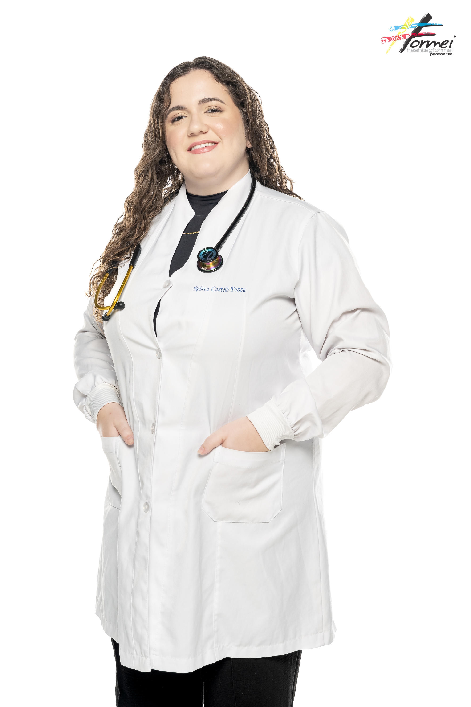

Assistência ao paciente crítico
Sistematização da assistência de enfermagem, avaliação clínica contínua e execução de procedimentos com foco em segurança do paciente, do acesso venoso à via aérea.
Enfermagem assistencial — cuidados críticos
Enfermeira generalista formada pela Universidade Federal de Alfenas, hoje em UTI adulto na Santa Casa de Poços de Caldas. Raciocínio clínico, domínio de procedimentos e escuta terapêutica aplicados ao paciente crítico.
Áreas de atuação: UTI adultoUrgência e emergênciaUnidades de internação

Minha formação foi construída junto à prática: terapia intensiva, internação, saúde da família, saúde mental e cuidados paliativos, somados a ligas acadêmicas e projetos de extensão.
Hoje atuo em UTI adulto, onde o cuidado exige vigilância contínua, decisão rápida e comunicação precisa com a equipe multiprofissional. Acompanho pacientes em ventilação mecânica, em uso de drogas vasoativas e em situações de instabilidade hemodinâmica.
Levo para cada plantão a mesma convicção: segurança do paciente e dignidade caminham juntas. Registro bem, passo plantão com clareza e converso com a família sem rodeios.
Sistematização da assistência de enfermagem, avaliação clínica contínua e execução de procedimentos com foco em segurança do paciente, do acesso venoso à via aérea.
Coordenação de equipe multiprofissional, organização de escalas, insumos e agendas, com decisões apoiadas em protocolos e evidência científica.
Passagem de plantão clara, escuta terapêutica com pacientes e familiares e condução empática de situações de sofrimento e fim de vida.
Santa Casa de Poços de Caldas
Hospital Gimirim — Poço Fundo, MG
Prefeitura de Alfenas, MG
Santa Casa de Alfenas
Prefeitura de Alfenas, MG
Santa Casa de Alfenas
Santa Casa de Alfenas
Universidade Federal de Alfenas (UNIFAL-MG)
2021 – junho de 2025
Centro de Treinamento em Saúde Vera Cruz Hospital — Fundação Roberto Rocha Brito
Curso de capacitação
Treinamentos em eletrocardiograma, suporte básico e suporte avançado de vida
Ensino e capacitação de equipes
UNIFAL-MG
Discussão de casos clínicos, prevenção de doenças, palestras e oficinas
UNIFAL-MG
Assistência a pacientes em cuidados paliativos
UNIFAL-MG
Assistência a pacientes com sequelas neurológicas e a seus cuidadores
Total disponibilidade para escalas 12×36 (diurno ou noturno), 6×1 ou comercial, com início imediato.
Registro COREN-MG 962.555 definitivo, ativo e com anuidade em dia.
Unidades de terapia intensiva, pronto-socorro e unidades de internação — setores em que já atuei na prática profissional e em estágios supervisionados.
O currículo em PDF está disponível neste link e também pode ser enviado por WhatsApp ou e-mail a qualquer momento.
Disponível para entrevistas, testes técnicos e início imediato.